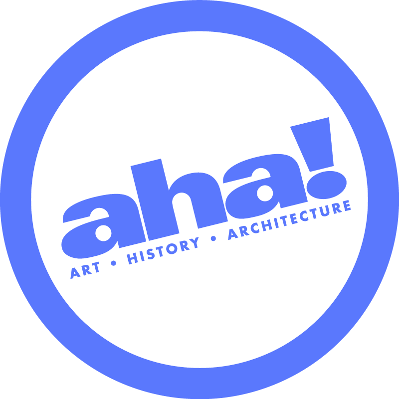

Visit a downtown stop
Discover one of five proposed participating businesses during December AHA. Say hello. Explore the store.

COLLECTORSAHA Collectors Challenge.
A Pokémon-inspired hunt that turns curiosity into local connection.

Meet younger locals through a culture they already care about. Give them a reason to step inside somewhere new.
For New Bedford residents ages 20–40, the invitation is simple: explore downtown, find a mystery card, and join the collectors at Waterfront.
Pokémon artwork, collecting, gaming, nostalgia, and creator culture make a shared interest the starting point.
Participating storefronts become places to visit. No purchase is required to receive a card.
A card-trading event and live coverage turn the final stop into a social experience.
Discover one of five proposed participating businesses during December AHA. Say hello. Explore the store.
Pick up one circular Poké Ball-inspired reward card. Fifty cards total. One per person across the entire event.
Bring the physical card to Waterfront Card Shop. Scan the QR code on its back there to discover your reward.
Redeem that day, trade cards, meet other collectors, and experience SBoogz’s live coverage.
A discovery trail, with no requirement to collect at every stop. Guests can continue exploring after receiving their card. The 20–40 demographic is the outreach focus, not an age restriction.
Five proposed collection stops. Ten cards per location. Waterfront is the separate final destination.
All collection partners are proposed. The fifth business is to be selected. Connections below show the event structure, not a geographic walking route.
752 Purchase Street, New Bedford [2]
Every card carries a mystery reward. One golden card carries the grand prize. The exact reward stays unknown until the on-site QR reveal.
Reward mix and grand-prize item to be finalized with Waterfront. The shop supplies the packs, discounts, and grand prize. Discounts require an eligible purchase to use; receiving a card does not.
Tap the card to turn it over ↻
Evidence for the idea, with the geography, age bands, and limits kept in view.
Percentage within each generation, not shares of all fans. GB adult survey, n=2,122. Generations overlap, but do not equal, the target age range. [3]
The opportunity: familiarity and affection can make a collector-themed invitation feel personally relevant.
Share of U.S. adults in each age group who say they ever use Instagram. Survey of 5,022 adults, Feb–June 2025. These are platform-use rates, not ad reach forecasts. [4]
The opportunity: business videos and SBoogz’s posts can meet younger adults in a channel they already use.
Twitch’s advertising site cites its 2022 global internal data. This is platform-wide audience composition, not SBoogz’s age breakdown or a current local attendance estimate. [5]
The opportunity: an in-person creator appearance connects the online community with a shared live experience.
of U.S. adults bought Pokémon cards for themselves in the previous six months, according to Circana’s March 2025 survey. Only one-quarter of those buyers played the game. Collecting offers an entry point beyond competition. [6]
These studies support audience fit. They do not establish a New Bedford participation rate or an exact under-40 percentage.
An invitation from a familiar face.
A live connection to the night.
Organizer-supplied figures. Not independently verified; monthly views can include repeat viewing. Audience geography, age mix, and average live viewers remain to be confirmed.
Promote the date and challenge during streams and direct followers toward downtown participation.
Livestream at AHA and Waterfront, bringing the discovery, people, and card-trading gathering into the content.
His role combines awareness and presence. Local followers are the strongest attendance opportunity; broad views create additional exposure.
Launch the event story. Show the circular cards. Explain free participation, the 50-card limit, and the Waterfront destination.
Release partner videos, reinforce the date, and build curiosity around the golden card. SBoogz promotes through his streams.
Share same-day reminders and accurate availability updates. SBoogz streams the AHA experience and Waterfront gathering.
Five partner spotlights + one Waterfront feature + one challenge explainer. Each participating shop gets at least one piece of content. Final lineup follows partner confirmation.
Paid campaign: focus on New Bedford residents ages 20–40. Use local storefronts, a clear December 10 invitation, and the free participation message. Dates are the proposed production schedule; event hours remain to be agreed.
Connect the businesses, shape the experience, coordinate content, and bring the challenge into AHA’s downtown program.
Help connect the pilot with sponsors and coordinate funding support. AHA retains ownership of the $1,500 budget, including allocation and spending oversight.
Supply packs, discounts, and the grand prize. Host the reveal, redemption, and card-trading gathering.
Promote in advance and livestream at AHA and the Waterfront event.
Welcome visitors, distribute their card allocation, and participate in short-form video promotion.
A $1,500 sponsorship opportunity, developed with AHA’s help, to introduce a new audience to downtown businesses and December AHA.
One sponsor can support the full pilot, or several can contribute toward individual costs. AHA retains budget ownership and spending oversight.
Packs, discounts, and the grand prize sit outside the cash ask. Their value is not estimated here.
Printing is budgeted at the upper estimate of $100. The full $1,500 is allocated; video production and recording, editing & ad curation remain separate budget lines.
Track cards distributed by location and whether guests discovered a business they had not visited before.
Count unique cards redeemed out of the 50 issued. Track Waterfront event attendance separately from card holders.
Offer a short, optional check-in: age band, New Bedford residency, first AHA visit, and how they heard about the event.
Report campaign reach, video views, spend, and creator results without treating views as unique visitors or adding overlapping audiences.
It is not a guarantee of 50 new AHA attendees, or a cap on everyone who might attend the trading event. Venue capacity and event hours must be agreed with Waterfront before promotion.
Bring together $1,500 in sponsor support with AHA’s help for December 10, 2026, and turn the proposal into a coordinated downtown experience.
Work with AHA to identify funding partners, align with its December program, and secure all five collection stops. AHA owns and oversees the event budget.
Agree on hours, Waterfront capacity, reward quantities, discount terms, and the grand prize.
Set up unique card codes and staff-verified, one-time redemption at Waterfront. Test every QR before printing.
Produce the seven videos, confirm SBoogz’s delivery schedule, and begin the two-week promotion.
SBoogz’s 58K Instagram followers and 1M+ monthly Instagram views are organizer-supplied, pending analytics verification. Research reviewed October 13, 2026. No attendance forecast is implied.
This is a proposal, not a live participant registration or redemption service. All collection businesses are proposed. The QR workflow is a recommended setup to be finalized. Pokémon is referenced as the cultural focus; no official Pokémon affiliation or sponsorship is claimed.